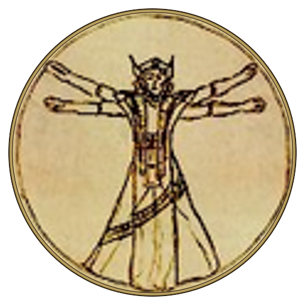

Browse mods
Find a mod here, then install it from the DwemerDistro launcher.
Mods are published by their authors and aren't reviewed by Dwemer Dynamics.

KAGRENAC Get startedFind a mod here, then install it from the DwemerDistro launcher.
Mods are published by their authors and aren't reviewed by Dwemer Dynamics.